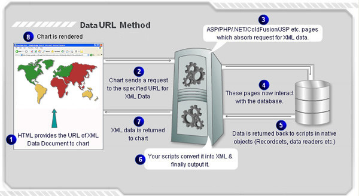
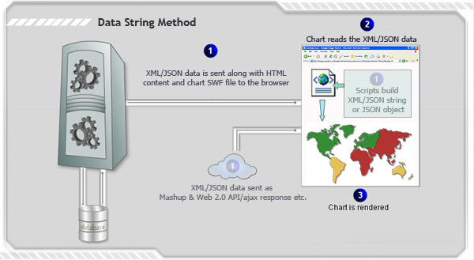

| Creating Database driven maps |
| In the previous page, we had explained how FusionMaps XT can be used with your server-side scripts. Your scripts can, in turn, connect to databases, Web services or other live data sources and provide dynamic data to FusionMaps XT. It means that whenever the map is rendered, it gets the latest data from the database and plots the same. FusionMaps XT works with all databases including MS SQL, Oracle, MySQL, PostgreSQL, CSV, or even legacy data storage.
Creating a map using dynamic data from database involves following steps:
|
| Different methods of providing dynamic data to maps |
|
Data can be provided to maps using following two methods:
Following illustrations provide an overview of each method: Data URL method  Data String method  |
| Using different server side technologies for creating database driven maps |
|
For quick reference to create maps using dynamic data from database and using various server-side scripting languages you may use the following links:
|